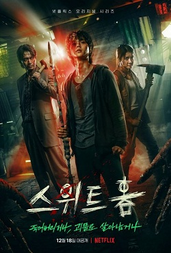
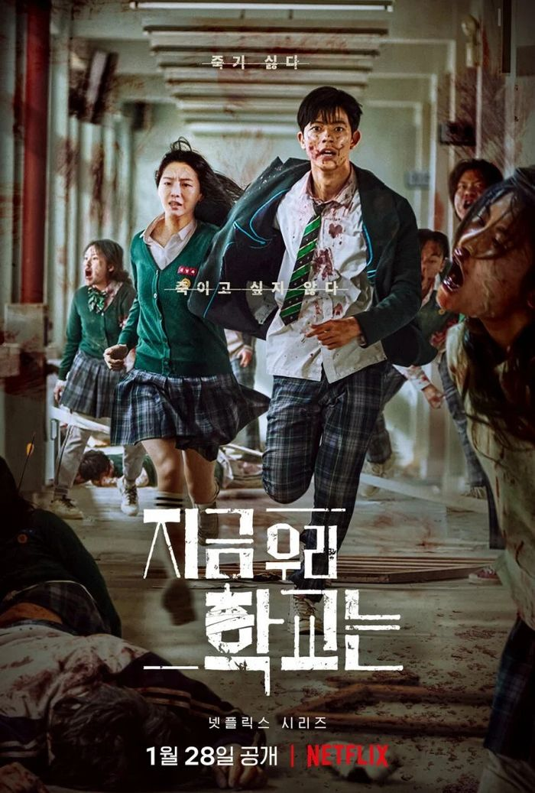
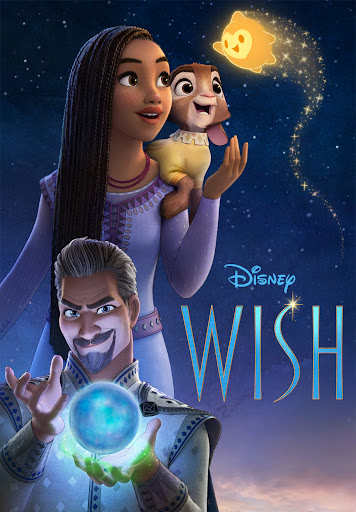
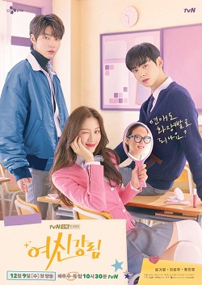

Daftar film favorit saya
Films
| No. | Judul Film | Tahun Rilis | Genre | Poster | Sound Track |
|---|---|---|---|---|---|
| 1 | Sweet Home | 2020 | Horor, misteri, dan thriller |
 | |
| 2 | All Of Us Are Dead | 2022 | Horor |  | |
| 3 | Wish | 2023 | Anak-anak/Fantasi |  | |
| 4 | True Beauty | 2020 | Roman |  |
- Sweet Home
- Serial ini bermula dari penggambaran situasi di mana dunia tiba-tiba berubah menjadi mengerikan. Manusia dapat berubah menjadi monster karena hasrat dan ambisi besar dalam diri mereka. Beberapa gejala ditunjukkan sebelum berubah menjadi monster, mulai dari mimisan parah, perilaku yang liar berapi-api, halusinasi, hilang kesadaran, warna bola mata berubah jadi hitam, hingga akhirnya berubah menjadi monster dan mengancam nyawa manusia. Serial ini pun fokus pada sekelompok masyarakat yang tinggal dalam gedung apartemen Green Home. Salah satunya adalah Cha Hyun-su (Song Kang). Ia merupakan remaja SMA yang baru pindah ke apartemen tersebut karena permasalahan keluarga.
- All Of Us Are Dead
- All of Us are Dead mengisahkan para siswa SMA Hyosan yang terperangkap di sekolah dan mencoba menyelamatkan diri dari wabah virus zombi. Mereka harus segera keluar dari sekolah sebelum terinfeksi dan menjadi zombi. Sejumlah siswa yang terinfeksi berubah menjadi zombi ganas dan menyerang siwa lainnya. Demi bertahan hidup, para siswa berupaya melawan zombi menggunakan barang-barang yang ada di sekolah, seperti kursi dan meja. Para siswa mau tidak mau harus bersatu untuk bertahan hidup melawan kawanan zombi yang berkeliaran di lorong-lorong sekolah. Hal itu juga membuat mereka harus bertahan di dalam kelas.
- Wish
- Film Wish menceritakan tentang Asha, seorang gadis berusia 17 tahun yang tinggal di Kerajaan Rosas. Asha bermimpi menjadi seorang putri dongeng, tetapi dia merasa bahwa Raja Magnifico, penguasa kerajaan, telah menyalahgunakan kekuatannya. Suatu hari, Asha berdoa kepada langit agar ada yang bisa membantunya.
- True Beauty
- TRUE BEAUTY drama mengisahkan tentang Lim Ju Kyung siswa SMA yang tidak percaya diri dengan wajahnya. Di sekolah lamanya, dia menjadi korban bully. Pernah mendapat perlakuan tidak baik lantaran penampilannya, membuat Ju Kyung akhirnya memutuskan menyembunyikan wajah asli dengan makeup.
Dengan penampilan barunya itu, di sekolah baru Ju Kyung dipuja bak dewi. Namun sejak saat itu, wajah asli Ju Kyung jadi rahasia terbesar yang berusaha dia sembunyikan. Dan hanya salah satu cowok saja yang tahu wajah asli Ju Kyung, dan cowok itu merupakan cowok yang paling populer di sekolah.
Tentu saja, selama masa SMA yang dilalui oleh Ju Kyung, ia terlibat dengan kisah cinta dengan dua orang pria yang sama-sama keren dan kece namun memiliki gaya dan kepribadian yang bertolak belakang. Cowok yang satu nampak kalem dengan wajah ganteng yang lembut, dan satu lagi memiliki wajah ganteng yang kuat.